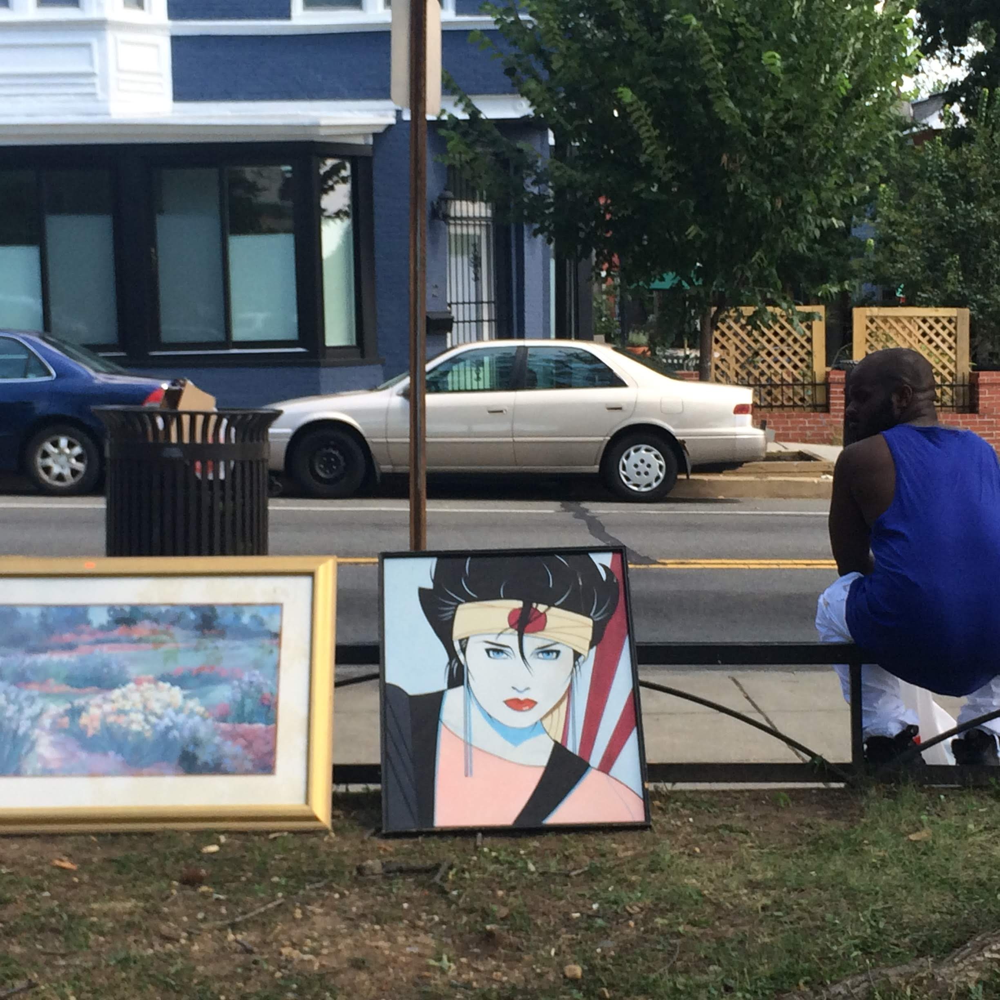

blog
While the world is not yet plain
Every cigarette turns a page in a book of blank pages.
Here I am again, waiting for inspiration. I palm a lighter, walk out the basement escape, into the summer sun, and fish half a Spirit from its hiding place in the cleats an old roommate left on the porch. I notice the bright green Nikes every time I walk in the door. They have been there since March.
I’m out of ideas, which can be a desperate place to be for a job applicant, a lover seeking attention, anyone looking for something to happen for them. Like a sorority girl hyperventilating over an empty social calendar, I’m thinking it’s time to do something rash.
From the north side of the unit block of Q Street Northeast, the south side appears oddly flat and painted, and because the rest of the city slopes southward toward the Anacostia nothing appears in the sky behind the varicolored rowhouses except a unanimously teal-blue sky. The day will be hot; Washington wears humidity like a knockout wears a spritz of sweet perfume. (If you are not careful either will put you to sleep.) The unkempt yard encroaches impolitely on the one white plastic lawn chair we have—an aggressively rural touch—so I stay on the stoop. It’s hard to light the stub without burning my nose, and I almost cough to death laughing at the idea of walking around with a snout browned by idiocy.
I am an amateur, an initiate, new to the cool desperation of waiting.
I inhale, and decimate myself. To maintain discipline, Roman commanders would kill a tenth of the centurions if a division failed to do its duty. I make a classic mistake of logical confusion, the effect for the cause, when I take the poison. Atonement for my sins, perhaps. (If my karmic account is at zero, and I initiate my own pain, is my next punishment voided, a tax credit for the cosmos?)
A boy chases a ball down the hill; the ball, like everything else, only trying to go where it is wanted. That’s what I don’t know: where am I needed, where am I wanted? I yearn for something to box me in so at least I can know where the walls are, and smash—or transcend—or even know them. I can hardly even face the full street; too many possibilities. In need of a smaller world, I close my eyes.
Even in darkness I am hounded by impatient suitors.
I want to flip ahead in the script of my life, hoping for the plot to thicken. We’re all waiting to be pulled into something: Mary gets a message, Luke chances on two escaped droids, and Harry—well, Hagrid turns up. Things happen. In lieu of that, I let my mind off-leash.
The leaves we burn in self-pity grow on alluvial plains, flattened by the onslaught of wind, water, and time. The sun, whose rays provide the energy for the plant’s lilting upward grasp, slouches towards silence as it lazily exhausts itself.
Our sun, beloved worshipped sun, never will supernova; it will swallow Earth before it retires for quiet stasis, a white dwarf in long contemplation of the suffering it birthed.
For a long time—as a child, really—I thought heat death meant the death of the universe by heat, heat as flame, fire and brimstone become full. I might not have been so confused if instead the phenomenon were dubbed the death of heat: the exhaustion of our world’s presumably finite supply of entropy. A whisper not a bang.
Curlicuing smoke signifies the approach of stillness. I wonder whether the wisps of smoke might be read, like tealeaves or lines on a palm, for a clue to the future.
It is nice to feel the jagged edge of each brick on my bared back. The bricks were once smooth and new; they will, someday, be smooth and old. The most random arrangement will smooth itself over time. They will be eroded by the fractal waves of a rising sea or molten by the lapping heat of a sun swollen with the third-order implications of a thousand explosions of thermonuclear solar plasma, the fluid dynamics of which expert practitioners don’t even pretend to understand.
Or they will be worn down by my millionth defeated slouch. For now, though, they have texture.
Our world is a hiccup in a quiet torrent, an ugly burp of brightness and right angles in an otherwise bland universe. Wherever there is order—three rocks stacked, the information coded in DNA, in complex sugars—it exists as a fluctuation in the probabilistic ledgers, a lotto ticket to existence, most of all an account to be drawn down carefully. Humans marshal always against disorder. Separating the wheat from the chaff is our great anti-entropic crusade in idiomatic form, but don’t we also crave its opposite, the stochastic jolt? Crops cultivated, the leaves harvested, the paper rolled, all so here comes the ash.
What we burn accelerates the world towards no contrast: the elegant geometry of the bonds, locked howsoever they are, now broken for a high, the form of their energy dissipated—their organization fled—never to light another scene. We hasten our efforts to oblivion. Grease the tracks and hurtle the cart on in its singular course. Electrons seek their base state. I wish my own way home were so clear.
Across Q Street, a woman howls, puts her head back and howls, and calls to a dog that definitely isn’t there. Her coats hang like refrigerator doors, her shoulders slumping with the weight. When she pitches her head back to howl, her cap stays on her head even at an improbable angle, heavier than wind, her cap redder than sunlight in childhood. That heat death I mentioned: it means an end to the difference of things, the contrast and the color.
There’s an analogy, perhaps a misleading one, to be drawn to the dulling of senses as we age. In a concrete sense, the human body is degraded by signal; tinnitus, notably, is the literal sound of ear hairs decaying, the ghost of a 4000-Hz vibration felt one time too many.
Even the inputs we can weather corrupt. Muscles strengthen, but only after tearing. Their repair requires nutrition, protein and calories, the digestion of which produces, in time, the degradation of the human body.
I lost my glasses yesterday, and as I myopically biked home I felt myself enter, again and again, a field of static. As I age, the world as my eyes report it will lose sharpness as my vision declines. Shapes will agglomerate, lose signal. Any of us, in time, will naturally enter a state that is the inverse of locked-in syndrome: though capable of a response, we will never see or hear or smell the prompt we might have been responding to.
In John Gardner’s Grendel, a Sartrean dragon offers small solace: “Half of suffering: things fade.”
When we smoke, we do so waiting, more often than not: for a friend to arrive, for a stroke of genius, for a worldly pain to pass. In our waiting burn the wick of the world. Reshuffle the deck, smoke another one, just pass two minutes, two measly minutes, and who knows what will turn up.
I don’t discern any patterns of augury in the roughness of the brick, nor in the unanswering disdain of the glowering street. But I won’t wait around for a better signal—“happens,” I know, is the most seductive word in the Anglo-American lexicon.
The reentry to being, Celan’s Atemwende, breath-turn. I feel for the grain of the moment, Dasein, welcome its infinite textures. I am glad that God for now has not made the rough plain, that he has not yet taken the crooked places away from us and made them straight.